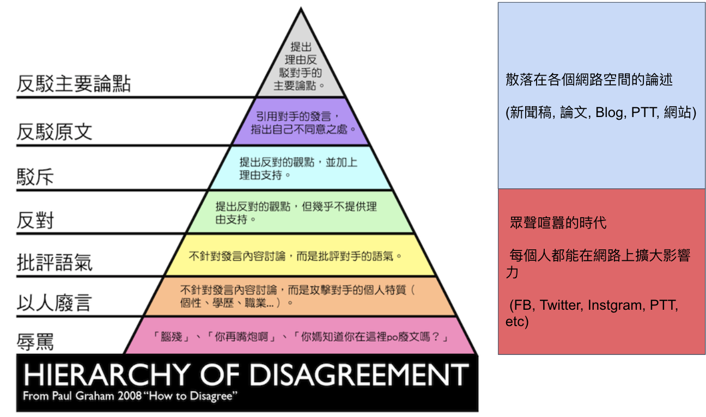

如何促進科技社群網路參與科技政策討論 - 以資訊科技社群為例 (草稿)
Table of Contents
1 封面
2 中文摘要
3 英文摘要
4 前言
「所有公共論述都逐漸以娛樂形式來傳達。我們的政治、宗教、新聞、體育、教育和商業，全都成為娛樂業的附庸，對此民眾多半毫無怨言，甚至漠不關心。於是，我們成為瀕臨娛樂至死的一群。」
– 尼爾·波茲曼（Neil Postman）
// 這邊有很多玩意沒寫 「未來應加強推 廣協作討論區的系統功能，或進一步導入新的協作方法，或建立新的誘因 制度，以吸引民間社群（如公民科技社群）結合政府開放資料，或透過網 路群眾協力（如群眾外包途徑）協助提案者釐清議題本質，進而提高民眾 提案品質。」廖洲棚、廖興中、黃心怡（2018）。 為此，貫穿本研究的核心問題是「如何設計虛實整合的(crowd sourcing)討論機制使網路社群能在政策規劃初期對政策產生建設性意見」。
Q: 數位工具真的能幫助收斂意見嗎？ A：看哪種目標… 如果只是要會議收斂討論的話是「facillator」，現階段不太有數位工具可以做到，但如果我們認為「參與」的最後結果是要能影響政策，這些大大小小的會議只是過程，真的能把碎片化意見收斂做出建設性意見的是「政策分析師」或是「幕僚」。 後面兩種人很需要工具幫忙做出議題裡面的論點與數據分析，只是現在資訊科技做不到。而就算是主持人好了，最後要整理好幾場分區會議的討論意見也是需要這樣的東西，但沒有「線上協作」概念做「參與」的 luddites 根本就不想嘗試這樣的數位工具，而有「知識者傲慢的」分析師或是政治菁英不會覺得 「民眾」可以給出什麼建設性的意見。 這中間分析師還要分做「量化分析」跟「質化分析」的，互相還會看不起對方。 再來逐字稿、資料是「資本」，「crowd sourcing」跟「協作」不存在在於他們的想像。
Q：網路真的適合做議題釐清嗎？ A：看你說哪個網路，internet？ www？還是 social network software ？ 要知道以前大家打開 kimo.com 就認為是連上網路。 如果說的是 social network software 他本來就不適合，它存在的初衷就不是要讓你做「公共論述」。但這現象也不是什麼新鮮事。 尼爾·波茲曼之前就講過「所有公共論述都逐漸以娛樂形式來傳達我們的政治、宗教、新聞、體育、教育和商業，全都成為娛樂業的附庸，對此民眾多半毫無怨言，甚至漠不關心。於是，我們成為瀕臨娛樂至死的一群。」
Q：社會問題不可能只靠數位工具解決。 A：只用「科技決定論」跟「反科技決定論」這兩個立場來討論都只是把問題給簡化討論。
5 研究目的
隨著網路原生代族群漸漸成為國家中堅力量，利用數位工具或是社交媒體議論時政已為稀鬆平常之事，過去政府嘗試的網路政策或願景參與，多在政策制定或執行端末期，由科技社群協助提供執行上的意見參考，未能更廣泛的搜集科技社群或一般大眾意見，同時缺乏良好的機制有系統、大規模的萃取有用的意見進入政策規劃週期。 本研究之目的在於設計一套適用網路原生代非同步的網路討論方式。
5.1 資訊來源不同、詮釋的角度不同得出不同決策

5.2 視域融合

6 研究方法
6.1 設計敏捷方法
設計敏捷方法 （Design Sprint Method）是由 Google 提出並且於內部實踐受到歡迎。概念基礎來自於敏捷開發（Agile）、設計思考（Design Thinking）與革新遊戲法（Gamestorming）。讓團隊在五天內定義關鍵問題和目標、大量發想產品解法、決定發展方向、做出原型、使用者測試。 詳見 The Sprint Book 。 本研究使用這個方法探索「科技政策如何在前期規劃納入更多民間專家的建設性意見」的可能性方案，為期 5 天，心得文可見「https://blog.sense.tw/2018/03/design-sprint-upgrade/」。
6.2 訪談調查法
訪談法透過與受訪者面對面之交流，獲取內容訊息的分析方法，特別是針對受訪者親身經驗之故事特別有用。 本研究主要透過訪談回顧歷年網路公民參與機制的設計與困難，部分受訪者選擇匿名不公開。 訪綱見附錄。
| 代號 | 分類 | 訪談時間 | 形式 |
|---|---|---|---|
| NPC1 | 社群專家 | 2017/12/21 7:30-9:30pm | 訪談 |
| NPC2 | 社群專家 | 2018/01/12 10:00-12:00am | 訪談 |
| NPC3 | 社群專家 | 2018/01/12 2:00-3:30pm | 訪談 |
| NPC4 | 社群專家 | 2018/01/16 2:00-4:00pm | 訪談 |
| NPC5 | 社群專家 | 2018/01/31 2:00-4:00pm | 非正式閒聊 |
| NPC6 | 智庫研究員 | 2018/02/09 2:00-4:00am | 訪談 |
| NPC7 | 私部門分析師 | 2018/03/01 4:00-5:00pm | 訪談 |
| NPC8 | 智庫研究員 | 2018/03/28 7:00-9:00pm | 使用者測試 |
| NPC9 | 服務設計師 | 2018/03/29 3:30-5:30pm | 使用者測試 |
| NPC10 | 首長幕僚 | 2018/04/02 7:30-9:30pm | 訪談、使用者測試 |
| NPC11 | 智庫研究員 | 2018/04/03 2:00-4:00pm | 訪談、使用者測試 |
| NPC12 | 社群專家、倡議者 | 2018/05/31 11:00-12:00pm | 訪談、使用者測試 |
| NPC13 | NPO 主任 | 2018/07/19 11:00-12:00pm | 訪談、使用者測試 |
6.3 數據分析法
透過實作一套數位工具或撰寫數位內容做為延續實體討論的網路社群空間，並分析使用者的數位痕跡 ( Digital Footprint ) 挖掘洞見或是進行操作實驗。本研究設計三個工具對目標社群進行集客式行銷 (Inbound Marketing) 並進而在自己的同溫層擴散來達到滾雪球抽樣。 主要關注的指標有實體討論到網路討論的轉換率、閱聽者在不同議題的年齡、地域分佈以及平均停留時間等等，在結論章節將詳加說明各指標意義。
6.3.1 數位原民參與手冊
6.3.3 網路議題釐清工具
// 大概內容 比較強調的議題相關的資料跟資料之間的關係，在不同的「statements」找出可以連貫所有「statements」的方式，以及將相關的「statemetns」從空間上 grouping 起來。 呈現同一件事情的不同面向，強調 diverse perspective 與以及對 stakeholder 的影響。 讓公共討論可以變成「不特定公眾可以利用休閒時間檢視評估議題裡面的問題跟可能解法及佐證依據，時間可以是長達好幾個月。 把每個人都當成「政策評估人員」看待，或是每個 community 預設總有幾個「積極公民」會去吵政策的優缺點。 不加「fact」，「evidence」的原因是因為每個人認定的事實很多種。「社會真實」分為「客觀真實」、「媒介真實」、「主觀真實」。實際上我們討論事情都是依據在「媒介真實」跟「主觀真實」上。所以「證據」就是去以「資訊來源」做佐證。 QA 是最簡單不用教的介面，但是QA如果是unstructured interface，對於新手仍然是困難的！question asking 仍然是個困難的task 想做self-assessment, formative assessment.簡單的說就是一連串“評估的檢視” diagnostic testing, 會包含feedback, peer-review, question…etc. 也是可以透過一些rubric或是guiding question去引導新手做自我評估 “self-assessment” or “self-feedback”, 但是問題又會出在新手根本無法做“深度反思“，因為能力不足 所以小聚裡面指定一人「唱反調」。reflection level 會對應到 “問題的深度“，也會對應到一個人對於概念的“理解程度” 主要是透過QA互動的方式去做 crowd sourcing problems, possible solutions 以及 摘要主要是透過QA互動的方式去做 crowd sourcing problems, possible solutions 以及 摘要 分享幾篇我很愛的paper：今年CSCW best paper (CS裡HCI的 top conference)：利用collaborative tagging and summarization去做group chat的sensemaking http://people.csail.mit.edu/axz/papers/cscw_tilda.pdf https://d.ucsd.edu/srk/papers/2017/GutInstinct-CHI2017.pdf 這篇是crowdsourcing questions，雖然是在 crowdsource scientific question，但是此篇目的在於如何guide non-expert to generate novel questions and collaboratively perform scientific work 製造衝突則可以透過調整參與者的多元性來處理，讓人意識到他的解法可能是別人的問題，去反思問題背後的問題
7 結果與建議
7.1 研究發現
7.1.1 TODO 這裡寫議題小聚操作的結果 (lloyd)
7.2 建議
8 參考文獻
- 廖洲棚、廖興中、黃心怡（2018）。開放政府服務策略研析調查： 政府資料開放應用模式評估與民眾參與公共政策意願調查。受委託單位：電子治理研究中心。國家發展委員會編印。NDC-MIS-106-003。
9 附錄
9.1 議題層次訪談大綱
9.1.1 訪談目的
了解科技政策是如何形成的？每個長官又各自在幹嗎？ 意見要怎麼講才會讓政府部門覺得議題很重要。
9.1.2 訪談對象
政務官、事務官、法人智庫、政治人物等等。
9.2 議題釐清工具相關開發資訊
9.2.1 源碼庫
- 前後端源碼: https://github.com/SenseTW/sensetw
- Annotation-Enabled web proxy: https://github.com/SenseTW/via
- 開發環境: https://github.com/SenseTW/devenv
9.3 民眾語彙腳本
9.3.1 對公部門介紹何為網路社群應如何比喻
透過宗教信仰的比喻，對較少數位協作經驗、沒有社群經驗的的人員建構對網路社群的想像。
- 語彙轉譯表
轉譯前 轉譯後 如何找出一個網路社群常用來討論的數位工具在哪？ 廟在哪裡? 如何判斷出一個網路社群存在？ 廟有很多信徒嗎? 如何算出一個網路社群的大小？ 廟的香爐有多厚? 如何找出誰是這個網路社群的專家？ 廟裡有幾尊神? 如何找出網路社群專家對一個議題有幫助？ 要拜哪一尊神才會靈? 要問幾次才能問到真正能給建議的專家? 要去過多少間廟才找得到會靈的神? 如何找出這個網路社群的黑話？ 要在廟裏怎樣講比較不被人當成小白? 如何找出網路社群跟網路社群之間的關係，怎麼接觸一個網路社群不會得罪另一個社群？ 進香路線規劃 如何在網路社群號召做某件事會有人跟隨？ 怎麼在廟裡變成神? 如何衍伸相關社群？ 怎麼分靈? 如何增加網路社群的凝聚感？ 如何讓信眾聚在一起增加感情? 如何成立一個網路社群？ 怎麼蓋一間廟? 怎麼讓一個網路社群變大？ 怎麼增加信徒? 怎麼不一個網路社群崩壞？ 怎麼不會有妙天? 如何判斷一個數位工具有沒有產生社群？ 這間廟有沒有管理委員會? 要花多久才會知道一個網路社群的專家不是專家？ 要多久信徒才會對神失去信仰
9.3.2 對網路社群介紹科技會報跟科技部的不同
9.3.3 對網路社群介紹行政部門如何分類議題的層次
每個層級的長官關心的議題大小不同，以政務委員為例，頂多看到第二級。
| 層次 | 關心議題的動機 | 長官 |
|---|---|---|
| 第一級 | 這議題會影響到臺灣嗎？ 哪些部會要出來負責 ？ | 院長/政委 |
| 第二級 | 部會針對議題的解法是什麼？ | 部長/主委 |
| 第三級 | 解法裡面的子解法是什麼 | 局處司 |
9.4 多元性檢查表
分類包含:
- 性別平等
- 內向外向
- 樂觀悲觀
- 發散收斂
- 對議題能貢獻的專業或經歷
- 地域經驗
- 年齡
- 學歷
- 工作
10 (工作區)參考資料蒐集
這裏列一下我讀過的。
10.1 書
- 許瑞宋譯（2014）。睡餵麵包屑裡的各種好主義 - 社會物理學 - 剖析意念傳播方式的新科學。 台灣。大塊。
- 吉蓮．邰蒂 (2016) 穀倉效應：為什麼分工反而造成個人失去競爭力、企業崩壞、政府無能、經濟失控？。台灣。三采。ISBN: 9789863425472。
- 波茲曼 (2016) 娛樂至死：追求表象、歡笑和激情的媒體時代（2016增修版）。ISBN:9789862622988。
- 凱斯．桑思坦、雷德．海斯蒂 (2015) 破解團體迷思：如何把團隊變得更聰明，讓集體決策更有智慧？。台灣。三采。ISBN: 9789863424901。
- 羅清俊 (2015)。公共政策：現象觀察與實務操作。台灣。揚智。ISBN:ISBN：9789862981955。
- Robert W. McChesney (2005) 問題媒體：二十一世紀美國傳播政治。台灣。巨流圖書公司。ISBN：9577322247。
- 倪炎元 (2009)。 公關政治學：當代媒體與政治操作的理論、實踐與批判。台灣。商周。ISBN：9789866472282。
- 艾力克斯‧山迪‧潘特蘭 (2014) 數位麵包屑裡的各種好主意：社會物理學──剖析意念傳播方式的新科學。台灣。大塊文化。ISBN：9789862135709。
- 森迪爾‧穆蘭納珊, 艾爾達‧夏菲爾 (2016)。 匱乏經濟學：為什麼老是在趕deadline？為什麼老是覺得時間和金錢不夠用？。台灣。遠流。ISBN：9789573275541。
- 艾爾．賴茲、傑克．屈特 (2011)。 定位：在眾聲喧嘩的市場裡，進駐消費者心靈的最佳方法。台灣。臉譜。ISBN：9789861207278。
- 錢穆 (2001)。 中國歷代政治得失。中國史學小叢書。ISBN：9570422270。
- 瞿海源 (2011)。 國會及電視媒體改革建議案。台灣。巨流圖書公司。ISBN：9789577324146。
- 愛丁納‧溫格、理查‧麥代謀、威廉‧施耐德 (2003)。實踐社群。天下文化。ISBN：9864172336。
- 陳建勳(譯)；Gillmor, D. (2005)。草根媒體─部落格傳奇。台北市。ISBN: 9789867794451。
- 約書亞‧格恩斯 (2017)。破壞性的兩難。台灣。ISBN:9789864772049。
- 查理‧蒙格 (2014)。窮查理的普通常識：巴菲特50年智慧合夥人 查理．蒙格的人生哲學(修訂版)。台灣。商業週刊。ISBN：9789866032646。
- William N Dunn (1981)。 Public Policy Analysis。
- 森迪爾‧穆蘭納珊, 艾爾達‧夏菲爾。(2015)。匱乏經濟學：為什麼老是在趕deadline？為什麼老是覺得時間和金錢不夠用。ISBN：9789573275541。
- 布賴恩·羅伯遜 (2015)。重新定義管理：合弄制改變世界。ISBN：9787508654973。
- Roger D, Joseph R. (2006)。大眾媒體研究。台北。學富。ISBN:981-240-679-4。
- 娜歐蜜・克萊恩 (2015) No Logo 顛覆品牌統治的反抗運動神經。15週年典藏紀念版。ISBN:9789571363486。
- 尼爾．艾歐, 萊恩．胡佛 (2015) 鉤癮效應：創造習慣新商機。ISBN:9789863209010。
- 查爾斯·杜海格 (2012)。為什麼我們這樣生活，那樣工作？。ISBN:9781400069286。
- 約翰‧米勒 (2018)。QBQ！問題背後的問題（30萬冊紀念版）。ISBN:9789573282129。
10.2 網頁
- The MSP Guide — 多方利益相關者夥伴關係實踐指南— 說明 取自https://medium.com/@vincent.wschen/the-msp-guide-多方利益相關者夥伴關係實踐指南-說明-ddb58bf7fefb。
- NRIs Toolkit: how to start your IGF Initiative? 取自https://www.intgovforum.org/multilingual/content/nris-toolkit-how-to-start-your-igf-initiative。
- Jo Freeman, 共筆翻譯。無架構的暴政。https://docs.google.com/document/d/1hbOZ4ApTHAK4feCNMAvIs8w7lCzH-acuaByL-OsK55A/edit。
- The Dark Sides of Our Digital Self: How the Internet Changes Our Thoughts and Behaviors 。 https://www.theemotionmachine.com/the-dark-sides-of-our-digital-self/。
- 黃哲翰 (2016)。數位利維坦君臨的前夕。https://theinitium.com/article/20160617-opinion-huangdschergan-digital/。
- 陳敦源、廖洲棚、黃心怡 (2017) NDC-MIS-105-004。政府公共溝通：新型態網路參與及溝通策。
- (2017) Game design patterns for building friendships。http://www.lostgarden.com/2017/01/game-design-patterns-for-building.html。
- (2009) 98年公務人員高等考試基礎訓練課程配當表。http://www.nacs.gov.tw/NcsiWebFileDocuments/f1b942d899ddd80423727a9c48d3edb1.pdf。
- 現階段我國參與式預算推動樣態分析。https://www.ndc.gov.tw/Content_List.aspx?n=0C0D88ABE4819AFD。
- 公共政策網路參與平臺」三周年執行情形報告。https://www.ndc.gov.tw/Content_List.aspx?n=0C0D88ABE4819AFD。
- Eric Steven Raymond (2014)。How To Ask Questions The Smart Way。http://www.catb.org/~esr/faqs/smart-questions.html。
10.3 論文
- 陳敦源、劉宜君、蕭乃沂、林昭吟 (2011)。 政策利害關係人指認的理論與實務：以全民健保改革為例。
- 蕭元哲 (2009)。 利害關係人對互動管理的瞭解與應用。文官制度季刊。
- 郭耀煌、許華欣 (2017)。科技計畫管理機制之研析。國土及公共治理季刊。
- Egon G. Guba & Yvonna S. Lincoln (2001) Constructivist evaluation。
- 羅凱凌 (2017)。公共參與眞的能提升效能感嗎？以全民健康保險會之利害關係團體參與為例。
- 謝宗學 (2003)。 網際民主與審議民主之實踐： 資訊化社會的桃花源村？。
11 研究筆記
- 組織為什麼會需要外部意見？
1.1 因為下列綜合效果而無法跳出思考盲點，特別是產生破壞性創新: 1.2 穀倉效應 1.3 團體迷思 1.4 生存者偏差 1.5 使用者視角 1.6 代理成本 1.7 鐵鎚人傾向
- 為什麼要網路參與？
2.1 網路有兩個特質，分別為媒體跟通訊。 2.2 建立通訊管道的成本低，要搜尋/保存資訊的成本也低。 2.3 Digital Twin: 最理想的狀況，是實體所有的東西在數位都有一個分身, 甚至是流程。
- 人類社會開始有越來越多 Digital Twin 有什麼問題？
- 知識演化越來越快，不在同溫層的人溝通上難以對焦。
- 注意力/資訊碎片化 - 釐清一件完全沒接觸的事情越來越難。
- 標籤式反射 - 不經過思考，武斷下結論。
- 同溫層 - 只會看自己想看的資訊，接觸想接觸的人。
- 極端言論 - 發表越極端的言論可以在同溫層吸引到更多眼球。
- 誤導資訊 - 散佈誤導資訊的成本很低，檢驗成本很高。
- 數位協作工具在什麼階段最能發揮功效？
5.1 宣傳 會議 5.2 準備 會前資料 5.3 告知 背景資訊 5.4 確認 會議結論 5.5 補充 其他意見
- 數位協作工具能在會議中能達到互動嗎？
- 非常難，只能做到非常淺度的參與。